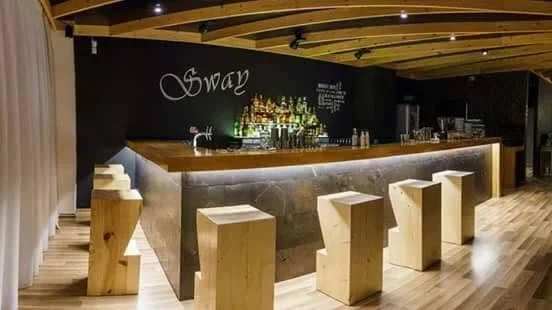
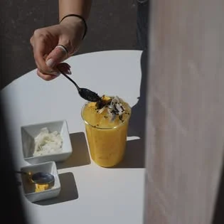
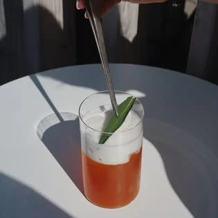
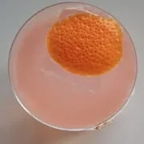

CaféBar Sway · Janka Jesenského 16
Kaviareň a bar v Topoľčanoch
Sway je „miesto, kde si v príjemnom prostredí vyberiete z bohatej ponuky káv, miešaných drinkov, prípadne iných alkoholických a nealkoholických nápojov.“
Raňajky Po–Pi 8:00–12:00 · So 9:00–12:00

Hodnotenia podľa Google a Facebooku, október 2026.
Otváracie hodiny overiť
Otvorené každý deň
Čas otvorenia je všade rovnaký. Google a Instagram sa líšia v tom, kedy sa zatvára — pred večernou návštevou radšej zavolajte.
| Deň | ||
|---|---|---|
| Po–Št | 8:00–19:00 | 8:00–20:00 |
| Piatok | 8:00–23:00 | 8:00–22:00 |
| Sobota | 9:00–23:00 | 9:00–22:00 |
| Nedeľa | 9:00–19:00 | 9:00–20:00 |
Raňajky Po–Pi 8:00–12:00 · So 9:00–12:00 (podľa Instagramu)
Káva a raňajky
Ráno a cez deň je Sway kaviareň: „bohatá ponuka káv“ a do obeda aj raňajky.

Miešané drinky
Večer patrí miešaným drinkom, prípadne iným alkoholickým a nealkoholickým nápojom. V piatok a v sobotu je otvorené dlhšie.
Ukážka návrhu: nápojový lístok s názvami a cenami doplníme podľa vašej ponuky.
Instagram · Facebook
Aktuálne fotky a novinky
Nové drinky, fotky a oznamy pribúdajú na Instagrame @sway_cafebar (1,2 tis. sledovateľov) a na Facebooku.


Kontakt
Na kávu aj na drink — Jesenského ulica, Topoľčany
Online
4,6 z 5 na Googli (395 recenzií) · 94 % odporúča na Facebooku (95 hodnotení)